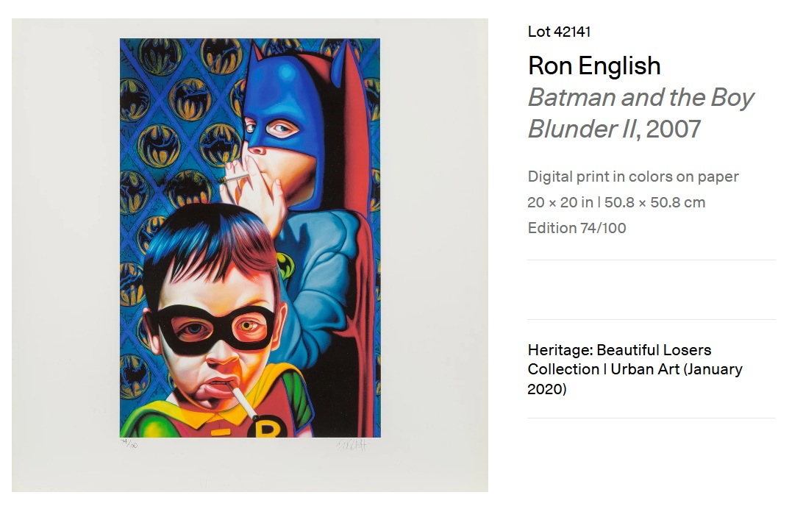

Literature
Ron English, Son of Pop: Ron English Paints His Progeny (San Francisco, California: 9mm Books and The Shooting Gallery, 2007), p. 77. ISBN 978-0-9766325-1-1.

Provenance
Private collection.
Notes
This work was later adapted by the artist as a print. Artsy’s artwork page lists Batman and the Boy Blunder II as a 2007 digital print in colors on paper measuring 20 × 20 inches (50.8 × 50.8 cm), edition 74/100; the listing also categorizes the work under “Photography.”
Poster reproducing Batman and the Boy Blunder II.
Ancillary Documentation




Selected Online Circulation
Selected examples of the work’s online circulation, reproduction, or discussion. This list is not exhaustive; it is intended to document representative appearances of the image beyond formal exhibition and publication records.